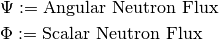

Table of Contents
Some introduction here.
Todo
Write small introduction and fix the notation.
Regarding the physics, some standard notation for the neutron transport is considered.

The differential operators will be written with
and
We use the following conventions for the indices inside the loops: